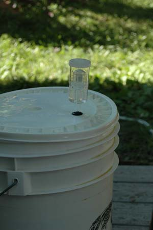

MEGAN PHELPS
More brewing equipment: This is what an airlock looks like. The airlock keeps out ambient air that contains bacteria while allowing CO2 to escape. When the beer is fermenting, the liquid inside will start to bubble as CO2 passes through.